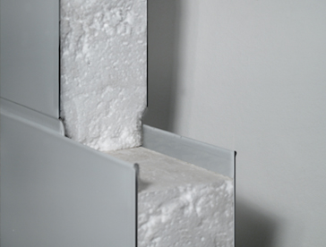

Venta y Administración:
Florida 274, 2º - (1005)
Buenos Aires - Argentina -
Tel: (54-11) 4326-0062 y líneas rotativas -
Fax: (54-11) 4326-3240
Florida 274, 2º - (1005)
Buenos Aires - Argentina -
Tel: (54-11) 4326-0062 y líneas rotativas -
Fax: (54-11) 4326-3240
Fábrica:
Ruta 7 - Km. 70 - (6700)
Luján - Buenos Aires - Argentina -
Tel: (02323) 420422 / 204347
e-mail: inca@incaaislaciones.com.ar
Ruta 7 - Km. 70 - (6700)
Luján - Buenos Aires - Argentina -
Tel: (02323) 420422 / 204347
e-mail: inca@incaaislaciones.com.ar
Poliestireno
. Ladrillo para losa
. Placas
. Bloques
. 1/2 caña
. Inca panel
. Núcleo EPS
. Núcleo PUR
. Núcleo LANA
. Ladrillo para losa
. Placas
. Bloques
. 1/2 caña
. Inca panel
. Núcleo EPS
. Núcleo PUR
. Núcleo LANA
Inca Panel
Paneles prefabricados por dos láminas que constituyen las caras exteriores del mismo. Pueden ser de:
. Chapa de acero standarnervada o lisa
. Galvanizada y prepintada con recubrimiento de pintura poliester
. Galvanizada.
. Chapa de acero inoxidable. Asis 304.
Paneles prefabricados por dos láminas que constituyen las caras exteriores del mismo. Pueden ser de:
. Chapa de acero standarnervada o lisa
. Galvanizada y prepintada con recubrimiento de pintura poliester
. Galvanizada.
. Chapa de acero inoxidable. Asis 304.
. Chapa de poliester reforzada con fibra de vidrio (PRFV), en varios espesores.
. Durlock - Corlok - Terciado Fenólico.
. Medidas:
Ancho: 960/ 1180m
Espesor: 50/ 65/ 75/
100/ 150/ 200 mm
Longitud: Hasta 12000 mm
(Descargar folleo)
